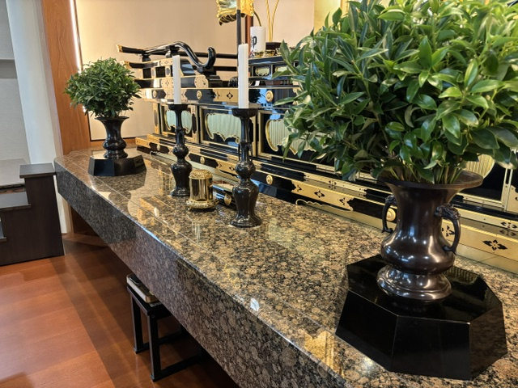

はじめての用語案内
妙本寺ホームページに出てくる言葉のうち、初めての方にはなじみが薄いものを、読み進めるための入口として簡潔にまとめています。
ここでは詳細な教学解説ではなく、ホームページを読みやすくするための簡単な案内にとどめています。
日蓮正宗におけるお供え
しきみ（樒）の意味
日蓮正宗において、仏前にしきみを供える意味をご紹介します。以下は寺院から提供された原稿に基づく説明です。

ご提供の文章では、しきみの常緑の葉は、日蓮正宗において仏の常住の生命を示すものとして説明されています。また、香りと清浄の意味も伝えられています。
日蓮正宗の信仰に関する説明として紹介しています。一般の植物学上の性質や効果を保証するものではありません。
お供えの仕方や疑問については、妙本寺へお問い合わせください。
参考にした資料：ユーザー提供「日蓮正宗でシキミを用いる意味」（本文・引用表現は公開前に寺院校閲が必要）。
提供原稿の全文を読む
シキミ（樒）は、植物の分類からいいますと木蓮科に属する植物で、古来より仏前で使われている日本唯一の香木です。香木ですから、その特有の香りは清浄無垢を表し、白檀や栴檀などと同様に火に焚きますと周りを浄化して、その香気は邪気を払って不浄なものを清浄に変えるという作用をもっています。四月から五月にかけて枝の先に小さな白い花を咲かせ、形は少し白蓮華に似ています。また、花の時期が過ぎますと今度は実を結んで星の形のような果実ができます。この実の形がまた、蓮華の実に似ているとも言われます。このように、シキミは昔より仏法に深い因縁をもっており、色花が綺麗であっても時間が経つと枯れていくという無常の姿とは違い、常に青々とした常緑樹の草花で、仏の常住の生命を示すものとして日蓮正宗では仏前の供えとして用います。
原稿の植物分類に関する表記などは、公開前の確認事項です。撮影場所および植物の同定も確認が必要です。
- 法華講
- このホームページでは、日蓮正宗の信徒組織・活動に関する文脈で使われています。
- 御講
- 妙本寺の定例行事の一つとして掲載しています。青年部・少年部合同部会は、毎月この御講日の午前11時30分から行っています。
- 教学
- 仏法の教えについて学ぶことを指す言葉として、青年部・少年部合同部会の紹介で使っています。
- 総本山大石寺
- 御住職の将来像の中で、妙本寺が守っていける力強い寺院を目指す対象として言及されています。